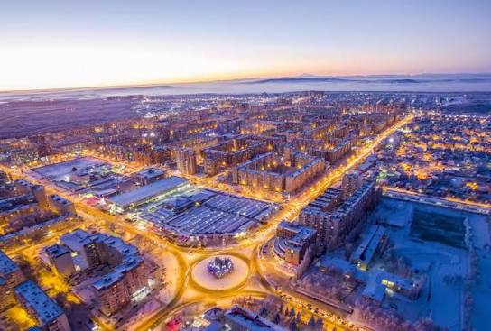

Ставрополь — это зеленый и уютный город на юге России, который славится своей историей, ветрами и живописными парками. Это настоящий «город креста», раскинувшийся на холмах.
Главные достопримечательности
- Крепостная гора
- Комсомольское озеро
- Площадь Ленина
Мои впечатления
Больше всего мне нравится гулять по тенистым аллеям центральных улиц, где можно отдохнуть после учебы.

Официальный портал города